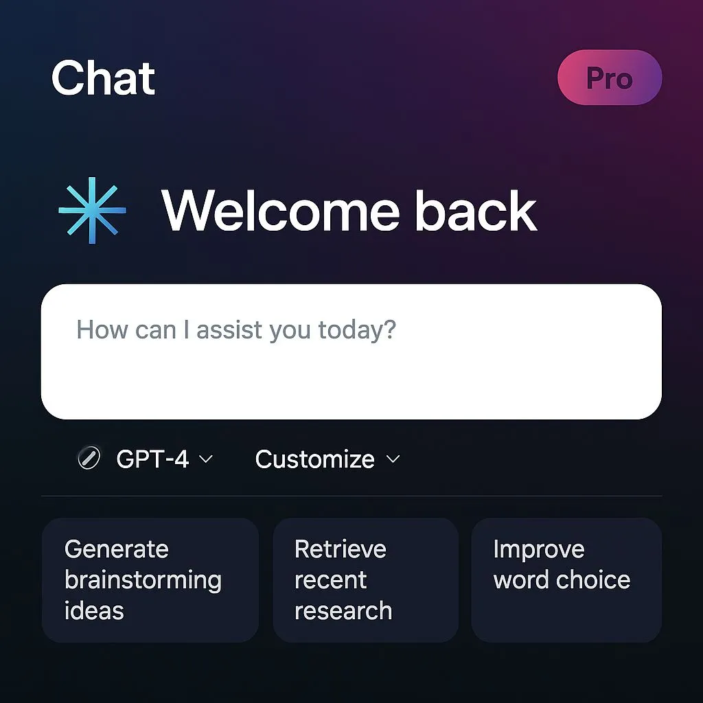

Designing AI interfaces around the autonomy slider
Originally posted on LinkedIn, July 10, 2025.
AI has dramatically changed the visual interface of products, but most of us keep building as if nothing happened. A new component has taken over a significant part of the screen: chat. This shift is dramatic for interface builders, even though it feels natural to users.
Chat has become a visual signal for how much AI exists in a system. Users recognize the product category as soon as they open it:
- A floating circle in the corner that opens a chat means there is a support bot.
- A landing page with a large chat box, followed by a product where chat occupies a quarter of the screen, signals an AI First product.
- An interface made entirely of chat signals an AI Chat product, such as ChatGPT.
We still see misleading UX. A chat appears on the home page but disappears once the user enters the product. This usually happens at companies that have not understood the purpose of the new interface. Products such as Airtable and Bubble use chat to start a process, but corrections and settings still happen manually in the traditional interface.
The same challenge appears in leading AI products. Claude, for example, presents a chat interface with MCP buttons for automatic actions. On one hand, this signals advanced automation. On the other, it feels like handing full control to the system, with processes running in the background without explanation, transparency, or monitoring.
This is the interface problem we still need to solve: how do we allow autonomy without taking away the user's sense of control?
I recently watched a talk by Andrej Karpathy, one of OpenAI's founders and the person who coined the term Vibe coding. He described successful interfaces as allowing movement along an “autonomy slider,” from small tasks that users trigger themselves to fully autonomous actions that run in the background.
“You control the autonomy slider. Based on the complexity of the task, you decide how much control you are willing to give up to the system.”
Cursor shows how this slider can move from basic assistance to full automation:
- Autocomplete while typing
- Changing a block of code
- Changing an entire file
- An agent making changes across the whole repo
As long as the user keeps a hand on the wheel, the sense of control and trust remains, even when the AI is driving.
There is another way to frame this. The complexity of the processes performed by AI should depend on how much confidence the interface gives the user. Can the user track what happened, understand it, and verify what happened and why?
Another approach is also developing: invisible AI, or No-UI AI. Here, intelligence does not appear as a chat or bot. It becomes part of the existing flow. Gmail completes sentences, Google Photos recognizes and categorizes images, and Notion adds AI capabilities directly to editing without introducing a new interface layer. It is a quieter, more precise, almost invisible approach.
As language models improve, interface developers need to understand the behavior and constraints this new world introduces. A good interface waiting for a better model will keep getting better. Even GPT-7 will not save a bad one.
